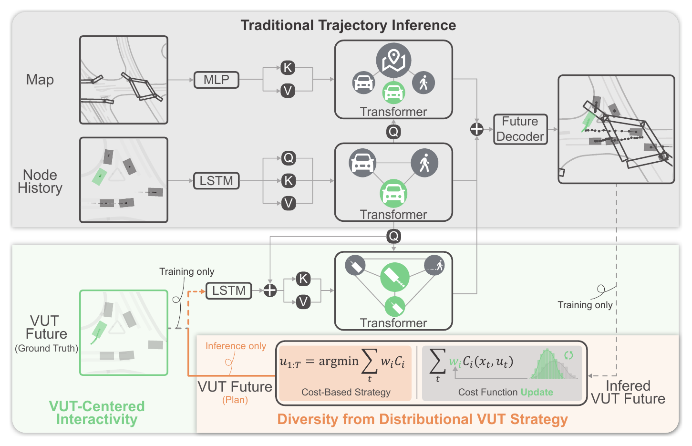
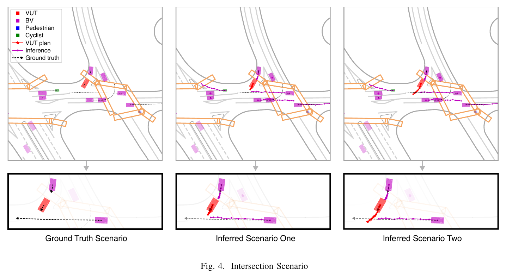
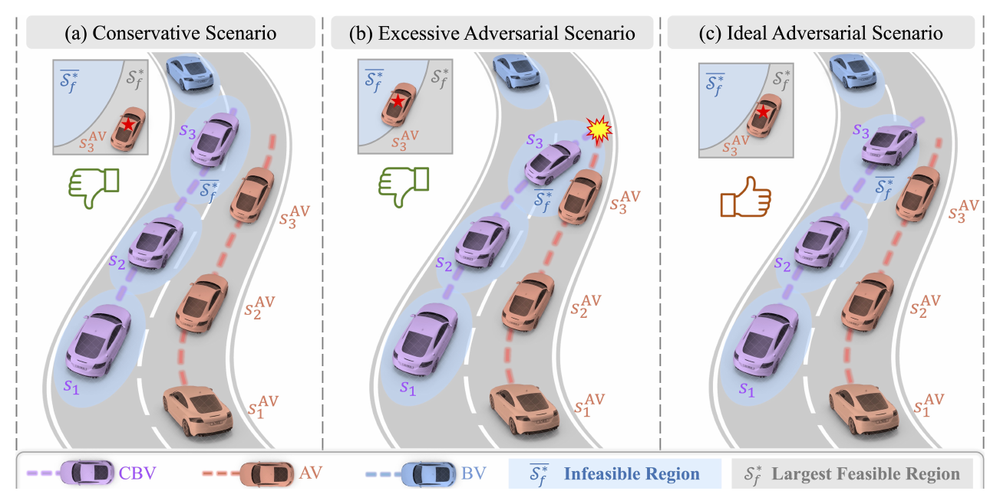
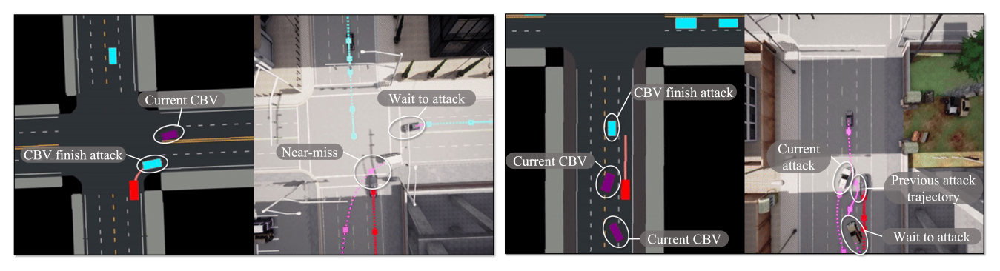
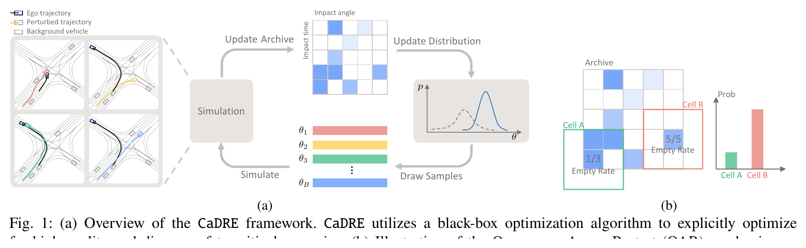
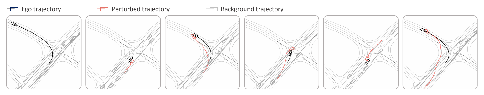
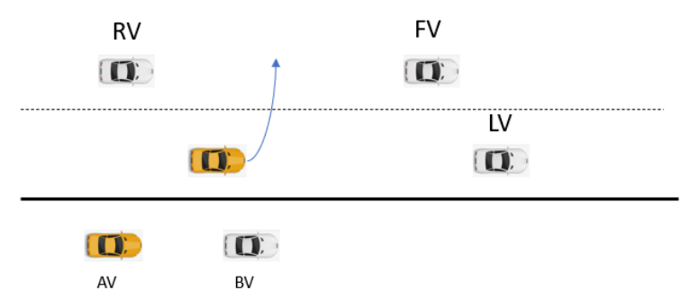
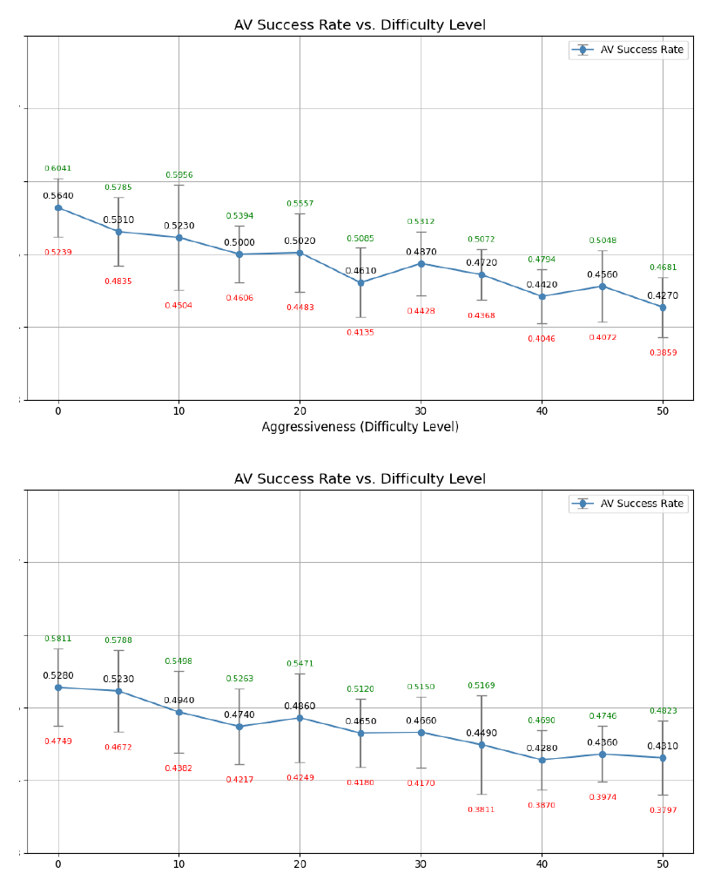
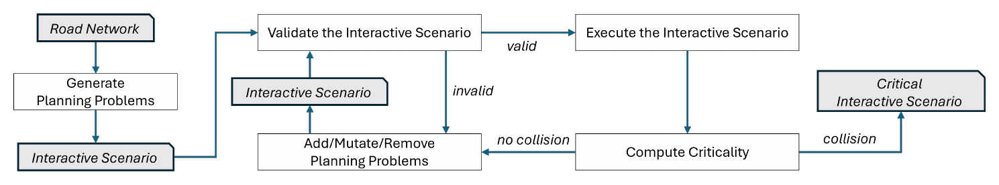
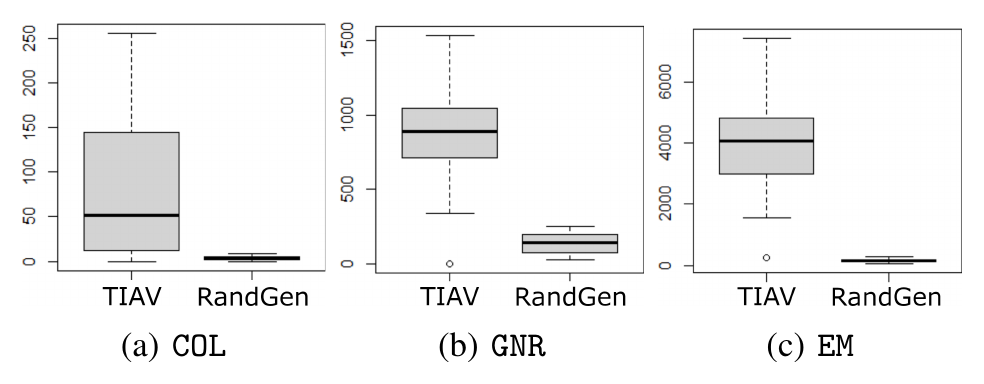

우리 모델의 나머지 두 구조를 받치는 부분이다. 적대 시나리오는 정적인 문항이 아니라 AV의 거동에 반응하고(reactivity), 위험의 강도를 단계로 높일 수 있다(severity). 이 두 성질이 임의의 가정이 아니라 이미 분야의 현실임을 생성 기법들에서 확인한다.
먼저, 용어 정리
반응성(reactivity)시나리오가 AV의 행동에 반응해 다르게 전개되는 성질. 시험으로 치면 문항이 수험생에 따라 바뀌는 셈이라, 난이도가 한 번의 주행이 아니라 그것을 만드는 생성기의 성질이 된다.
위험도 조절(severity-conditioning)적대의 강도를 단계로 높이거나 낮추는 것. 강도를 바꿔 가며 AV의 충돌을 보면 강건성 곡선과 그 중간점 c50(절반이 충돌하는 강도)을 얻는다.
닫힌 루프(closed-loop)AV의 거동이 시나리오 전개에 되먹임되는 구조. 열린 루프(녹화 재생)와 달리 배경 차량이 AV에 응답한다.
VUT (Vehicle Under Test)시험 대상 차량, 곧 AV다. 우리 비유에서 수험생에 해당한다.
2024 · Tongji University2024VUT 중심 반응형 시뮬레이션reactivity
Towards Interactive Autonomous Vehicle Testing: Vehicle-Under-Test-Centered Traffic Simulation (VCDI)
Y. Liu, X. Zhao, J. Sun. (2024). Key Laboratory of Road and Traffic Engineering, Tongji University. 코드: github.com/YNYSNL/VCDI.
한눈에배경 교통이 시험 대상 AV(VUT)에 반응하도록 만드는 시뮬레이션이다. 핵심은 VUT의 예상 미래 궤적을 모델 입력으로 넣어, 주변 차량이 VUT의 움직임에 맞춰 거동을 바꾸게 한 점이다. 즉 시나리오가 AV에 반응한다(reactivity). 게다가 VUT의 전략을 가우시안 분포 비용함수로 두어, 그 전략을 바꾸면 같은 초기 상황에서 다양한 시나리오 전개가 풀려 나온다. 기존 모델 기반 시뮬레이션(IDM)이 너무 조심스러워 위험 상황을 못 만들던 한계를 넘어, AV에 반응하는 위험한 상호작용을 만든다.
Fig 1 · VCDI 프레임워크(VUT 중심 반응성 + 분포 전략)

위쪽은 기존 궤적 추론, 아래 초록 영역이 VCDI의 추가분이다. VUT의 미래 궤적을 입력으로 넣어 주변 차량이 VUT에 반응하게 하고(VUT-Centered Interactivity), VUT 전략을 분포로 두어 다양한 전개를 만든다. (클릭 시 확대)
Fig 4 · 같은 교차로, VUT 전략에 따라 갈리는 배경차 거동

같은 교차로 초기 상황에서 VUT의 전략(효율 선호)을 바꾸자, 배경 차량이 VUT에 돌진하던 거동에서 양보하는 거동으로 바뀐다. 시나리오가 AV의 전략에 반응해 다르게 전개된다. (클릭 시 확대)
접근
Transformer 조건부 궤적 추론, VUT 미래를 입력으로
반응성
배경 차량이 VUT의 예상 궤적·전략에 응답
다양성
가우시안 분포 비용함수로 VUT 전략을 바꿔 전개 생성
우리와의 연결
난이도는 한 주행이 아니라 반응형 생성기의 성질
연구 배경
AV 시험은 배경 교통이 시험 대상(VUT)과 실제처럼 상호작용하는 환경을 요구한다. 그런데 기존 방법은 셋 다 한계가 있다. 녹화 재생(log test)은 현실적이지만 VUT와 상호작용하지 않고, 학습 기반은 상호작용을 배우지만 VUT를 전략 없는 장애물로 취급해 다중 상호작용에서 떼어 놓는다. 모델 기반(IDM)은 VUT에 반응은 하지만 지나치게 조심스러워 위험한 상호작용을 못 만든다"analytical models often result in overly cautious behavior from background vehicles, thus failing to simulate hazardous interaction patterns"(§II). 시험에 정작 필요한 고위험 시나리오를 만들지 못한다는 것이다.
무엇을 했나
VUT 중심 환경 동역학 추론(VCDI)을 제안한다(Fig. 1). Transformer 기반 궤적 추론에 VUT의 예상 미래 궤적을 추가 입력으로 넣어, 주변 차량이 VUT의 움직임에 반응·전략적으로 거동을 조정하게 한다"This enhancement aims to capture the reactive and strategic adjustments of surrounding agents to VUT's future motion"(§III). VUT의 전략을 알 수 없는 시험 상황을 위해, 실제 AV 관련 주행 데이터에서 학습한 가우시안 분포 비용함수로 VUT 전략 프리셋을 만들고, 그 프리셋을 바꿔 같은 초기 상황에서 다양한 배경 교통 전개를 푼다.
방법론 상세
입력 구성: 지도 정보(MLP 인코딩), 주변 N개 에이전트의 과거 상태(LSTM), 그리고 VUT의 미래 궤적 SfutVUT(LSTM)을 Transformer에 함께 넣어 시공간 관계를 잡는다.
VUT 중심 상호작용: 전통적 추론이 VUT의 예상 거동을 무시하는 것과 달리, VCDI는 VUT 미래를 조건으로 두어 배경 차량의 응답을 만든다(Fig. 1).
분포 비용함수:VUT 전략을 vVUT=argmin ΣwiCi 형태의 비용으로 두되 가중치 w를 가우시안 분포로 두어, 분포에서 표본하거나 특정 값을 골라 시나리오 전개를 "여는 열쇠"로 쓴다.
데이터·검증: Waymo Open Motion Dataset(2초 관측 + 5초 예측, 10Hz)으로 학습·검증한다. ablation으로 VUT 입력을 뺀 기준 모델보다 궤적 예측 정확도가 높음을 보인다(Table I).
결과
VUT 전략을 바꾸면 같은 초기 상황에서 배경 교통이 다르게 전개된다(Fig. 4). 교차로에서 VUT의 효율 선호를 높이자, 배경 차량의 거동이 VUT에 돌진하던 것에서 양보하는 쪽으로 바뀌었다. 차간추종 시나리오(Fig 3)에서도 VUT 전략에 따라 배경차 궤적이 의미 있게 갈렸다. 결론은 분명하다 "the VUT-centered augmented input enables background traffic participants, driven by DL-based models, to dynamically interact with VUT"(§VI). 곧 배경 교통이 AV에 실제로 반응한다.
한계
반응이 학습 데이터(Waymo)와 분포 비용함수의 형태에 묶이고, VUT의 실제 전략을 모를 때는 프리셋으로 근사한다. 적대성을 직접 최적화하기보다 다양한 전개를 만드는 데 초점이 있어, 위험도를 정해진 단계로 조절하는 메커니즘은 명시적이지 않다. 검증도 궤적 예측 정확도와 사례 시연 중심이다.
본 연구와의 관계
VCDI는 우리 반응성 구조의 가장 직접적인 근거다. 배경 교통이 VUT에 반응한다는 것은, 같은 시나리오라도 어떤 AV가 들어오느냐에 따라 전개가 달라진다는 뜻이다. 시험 비유로는 문항이 수험생에 따라 바뀌는 것이라, 시나리오 난이도를 한 번의 고정된 주행으로 정의할 수 없고 그것을 만드는 반응형 생성기의 성질로 두어야 한다. 우리는 난이도 b를 단일 rollout이 아니라 생성기 수준에서 정의하는데, VCDI가 바로 그 반응형 생성기의 실물이다.
분포 비용함수로 VUT 전략을 바꿔 전개를 조절하는 부분은 우리 위험도 조절(severity)과도 닿는다. 가중치를 한 방향으로 밀면 더 공격적인 전개가 나오므로, 이를 단계적 강도로 정렬하면 강건성 곡선의 입력이 된다. 다만 VCDI는 적대성·위험도를 정해진 척도로 조절하지는 않으므로, 우리는 이런 반응형 생성기 위에 severity 조건화를 명시적으로 얹어 c50 같은 강도 척도를 정의한다. 정리하면 VCDI는 "시나리오가 AV에 반응한다"는 우리 출발 가정이 분야의 현실임을 보여 준다.
CoRL 20242024실행가능성 유도 적대 생성reactivity + 회피가능성
FREA: Feasibility-Guided Generation of Safety-Critical Scenarios with Reasonable Adversariality
K. Chen, Y. Lei, H. Cheng, H. Wu, W. Sun, S. Zheng. Conference on Robot Learning (CoRL) 2024. Tsinghua University · The University of Hong Kong. (프로젝트: currychen77.github.io/FREA)
한눈에적대 시나리오 생성이 적대성을 무작정 키우면 어떤 정책으로도 못 피하는 충돌이 나와 버린다. FREA는 그 상한을 AV의 "최대 실행가능영역(Largest Feasible Region, LFR)"으로 둔다. LFR은 그 상태에서 충돌을 피하는 최적 정책이 존재하는 영역으로, 핵심 배경차(CBV)가 AV에 적대적으로 반응하되 AV가 LFR 안에 머무는 한도에서만 위협을 키운다. 그래서 피할 수 있는 near-miss는 많이 만들고, 피할 수 없는 충돌은 줄인다. 반응형 적대 생성(reactivity)과 회피가능성(섹션 D)을 한 틀에서 묶은 셈이다.
Fig 1 · 보수적 · 과도적대(회피 불가) · 이상적 적대(실행가능)

(a) 덜 적대적이라 너무 쉬운 시나리오, (b) AV가 실행불가영역에 들어가 회피 불가 충돌, (c) AV가 실행가능영역(LFR) 경계에 바짝 붙은 이상적 적대 시나리오. FREA는 (c)를 노린다. (클릭 시 확대)
Fig 5 · FREA가 생성한 대표 적대 시나리오

FREA가 만든 적대 시나리오. 보라색 핵심 배경차(CBV)가 빨강 AV를 향해 공격해 near-miss를 만든다(교차로·직선도로). AV가 피할 수 있는 한도 안에서 위협이 일어난다. (클릭 시 확대)
접근
CBV를 RL로 적대 제어 + AV 실행가능성(LFR)으로 상한
LFR
Hamilton-Jacobi 도달성으로 정의, 오프라인 데이터로 사전학습
핵심 결과
near-miss는 늘리고 회피 불가 충돌은 줄임
우리와의 연결
반응성 + 하한 u(LFR 경계 = 회피가능성 경계)
연구 배경
적대 시나리오 생성은 보통 충돌률이나 AV까지 최소거리로 적대성을 재며 그 값을 키운다. 그런데 적대성의 적절한 상한이 없으면 시나리오가 과도하게 적대적이 되어, 어떤 운전 정책으로도 막을 수 없는 충돌이 생긴다. 이는 "적절히 행동했다면 피할 수 있었을 충돌"로 AV를 시험·개선하려는 목적과 어긋난다"pursuing maximum adversariality still results in excessive adversarial scenarios"(§2). 그래서 적대적이되 합리적인, 곧 피할 수 있는 시나리오를 만드는 것이 동기다.
무엇을 했나
안전 강화학습(Safe RL)의 실행가능성 개념을 빌려, AV의 실행가능성으로 적대성의 상한을 정한다(Fig. 1). 어떤 위험 상황에서 AV가 충돌을 피할 최적 정책이 존재하면 그 상태는 AV의 최대 실행가능영역(LFR) 안에 있다. LFR의 경계를 적대성의 상한으로 삼아, 가장 적대적인 시나리오라도 AV가 피할 수 있는 한도를 넘지 않게 한다. 곧 이상적인 시나리오는 AV가 LFR 안에 있되 경계에 바짝 붙은 경우다 "Ideal adversarial scenario, effectively balancing adversarial and AV's feasibility"(Fig. 1 caption).
방법론 상세
LFR 정의: Hamilton-Jacobi 도달성(HJR)으로 최적 실행가능 가치함수 Vh를 정의하고, LFR을 그 함수의 0 이하 준위집합으로 둔다. 이 가치함수는 AV가 하드 제약을 지킬 정책이 존재하는지를 가리키는 지표다"the optimal feasible value function serves as an indicator of whether there exists a policy of AV that achieves hard constraints"(§3.1).
2단계 틀: 먼저 여러 AV 알고리즘의 주행 궤적에서 오프라인 학습으로 AV의 최적 실행가능 가치망 Vh(sAV)·Qh(sAV)를 사전학습한다.
실행가능성 의존 적대 목적: 그다음 핵심 배경차(CBV)가 적대 정책을 학습하는데, AV가 LFR 안에 있을 때는 CBV의 적대 보상을 최대화하고, 벗어나면 AV의 제약 위반을 최소화한다 "maximize CBV's adversarial rewards when the current state ... of the AV are within LFR and minimize the AV's constraint violations otherwise"(§3.2).
차원 축소: 장면의 일부 핵심 배경차(CBV)만 결정적 순간에 제어해 계산 복잡도를 줄인다.
결과
실행가능성으로 유도한 적대 정책은 near-miss 사건을 많이 만들면서도 과도 적대 시나리오와 회피 불가 충돌을 크게 줄였다. 생성된 시나리오에서 보라색 CBV가 빨강 AV를 교차로·직선도로에서 공격해 near-miss를 만드는 모습이 보인다(Fig. 5). 또 여러 대리 AV 방법과 교통 환경에 걸쳐 일반화·강건함을 확인해, 시험 도구로서의 쓸모를 보였다.
한계
LFR이 그 AV 자신의 최적 정책을 기준으로 정의되므로, 무엇이 "피할 수 있는가"의 경계가 AV마다 다르다. LFR을 오프라인 데이터로 근사하는데, AV가 고정 정책으로 상호작용하면 얻어지는 영역은 진짜 LFR의 부분집합에 그친다. HJR·Safe RL 학습 비용이 들고, 핵심 배경차만 제어하는 단순화가 들어간다.
본 연구와의 관계
FREA는 우리 두 구조를 한 틀에서 보여준다. CBV가 AV에 적대적으로 반응한다는 점에서 반응성이고, 적대성의 상한을 AV의 실행가능성(LFR)으로 둔다는 점에서 회피가능성이다. LFR 경계가 곧 회피가능성의 경계라, 그 바깥(실행불가영역)이 우리 하한 u(어떤 정책으로도 못 피하는 충돌)에 해당한다. FREA가 일부러 LFR 안쪽 near-miss를 노리고 바깥의 회피 불가 충돌을 피하는 것은, 좋은 적대 시나리오가 난이도 b는 높되 하한 u를 넘지 않아야 한다는 우리 직관과 정확히 같다.
차이는 경계의 기준이다. FREA의 LFR은 그 AV 자신의 최적 정책으로 정의되어 AV마다 다른데, 이는 회피가능성·하한이 정책에 상대적임을 보여주는 또 하나의 증거다(섹션 D의 Calò와 같은 맥락). 우리는 하한 u를 한 AV의 LFR이 아니라 "어떤 AV도 못 피하는" 경우로 일반화해 측정 모델에 통합하고, 그 위에 시나리오 난이도와 AV 강건성을 함께 올린다. 또 FREA의 실행가능성 의존 목적은 적대성을 LFR 경계까지 끌어올리는데, 이를 단계로 정렬하면 우리 위험도 조절(severity)의 한 구현이 된다.
CaDRE: Controllable and Diverse Generation of Safety-Critical Driving Scenarios using Real-World Trajectories
P. Huang, W. Ding, B. Stoler, J. Francis, B. Chen, D. Zhao. IEEE/RSJ IROS 2024. Carnegie Mellon University · Bosch. arXiv:2403.13208.
한눈에적대성을 무작정 키우기보다 위험 시나리오를 현실적·다양하게·제어 가능하게 만드는 데 초점을 둔다. 핵심은 시나리오 생성을 Quality-Diversity(QD) 최적화로 다시 본 것이다. 실주행 궤적에 제한된 섭동을 가해 현실성을 지키고, QD로 행동 특성(measure) 공간을 폭넓게 탐색해 다양한 위험 시나리오의 archive를 만든 뒤, 원하는 measure 값으로 시나리오를 골라내 제어한다. 곧 "이런 특성·강도의 위험 상황을 달라"고 요청해 뽑을 수 있다. 우리 위험도 조절과 난이도 범위 커버리지에 닿는다.
Fig 1 · CaDRE 프레임워크(QD archive · 분포 갱신 · OAR)

CaDRE는 실주행 궤적에 가하는 섭동의 분포를 QD로 갱신하며 grid archive를 채운다(a). OAR(b)로 빈 칸 탐색을 지속해 다양성을 높인다. 검은상자 최적화로 품질과 다양성을 함께 최적화한다. (클릭 시 확대)
Fig 4 · 한 실주행 시나리오에서 만든 다양한 변형

한 비보호 좌회전 시나리오(맨 왼쪽 원본)에서 섭동으로 만든 여러 변형. 각 변형은 measure 값이 달라 서로 다른 위험 행동을 보인다. 같은 장면에서 다양한 위험 시나리오를 제어해 생성한다. (클릭 시 확대)
접근
Quality-Diversity 최적화 + 실주행 궤적 제한 섭동
세 목표
현실성 · 다양성 · 제어가능성
제어 방식
원하는 measure 값으로 archive에서 시나리오 검색
우리와의 연결
severity·난이도 범위를 측정·요청하는 수단, 공변량
연구 배경
안전 위험 시나리오 생성에는 세 도전이 있다. 현실에서 일어남직한 현실성, 한 가지 실패 유형이 아니라 넓은 범위를 덮는 다양성, 그리고 원하는 특성에 맞춰 만드는 제어가능성이다. 대다수 선행은 적대 생성에 집중해 적대성은 키우지만, 다양성과 제어가능성을 명시적으로 최적화하지 않는다. CaDRE는 적대 생성에서 벗어나, 다양성과 제어가능성을 정면으로 다루는 쪽을 택한다.
무엇을 했나
안전 위험 시나리오 생성을 Quality-Diversity(QD) 문제로 다시 세운다. QD는 "성능은 높으면서 질적으로 서로 다른" 해의 집합을 찾는 최적화다(Fig. 1). 실주행 궤적에 제한된 섭동을 가해 현실성을 지키고, 개선한 QD 알고리즘으로 연속 매개변수 공간을 탐색해 다양성을 높이며, 원하는 measure 값으로 보관된 시나리오를 검색해 제어가능성을 얻는다. 그 결과 도메인 지식으로 정의한 measure 함수에 따라 행동이 제각기 다른 수천 개의 위험 시나리오 archive를 얻는다 "an archive that contains thousands of critical scenarios, each with different behaviors according to the measure functions we defined using domain knowledge"(§III).
방법론 상세
QD 정식화:측정(measure) 공간의 각 점마다 목적값을 최적화하고, 공간을 격자로 나눠 각 칸의 최선해를 archive에 보관한다. 이를 자율주행 위험 시나리오에 처음 적용했다 "we are the first to formulate QD for safety-critical scenario generation in autonomous driving"(§II).
현실성: 시나리오를 실주행 궤적에 대한 제한된 섭동으로 매개변수화해, 생성물이 실제 거동에서 크게 벗어나지 않게 한다.
탐색 루프: QD로 섭동 분포를 갱신하고, 시뮬레이션으로 행동 measure를 얻어 archive를 갱신한다(Fig. 1). Occupancy-Aware Restart(OAR)로 빈 칸 탐색을 지속한다.
measure 함수: 도메인 지식으로 세 measure 함수를 정의해 섭동 시나리오의 다양한 행동을 특징짓는다.
결과
세 대표 시나리오 유형에서 CaDRE가 RL·표본 기반 기법(Random Search·GOOSE·SVPG·REINFORCE 등)보다 다양성·품질·표본 효율 모두에서 앞섰다. 한 실주행 시나리오에서 섭동으로 measure 값이 다른 여러 변형을 만들어, 같은 장면에서 서로 다른 위험 행동의 시나리오를 제어해 생성함을 보인다(Fig. 4). archive 시각화에서도 CaDRE가 기준선보다 훨씬 넓은 measure 공간을 덮었다.
한계
실주행 궤적의 제한된 섭동으로 만들므로, 배경차가 ego에 닫힌 루프로 반응하기보다 미리 정한 섭동을 따른다(반응성은 약하다). 다양성·제어가능성은 사람이 정의한 measure 함수에 의존하고, measure 공간 이산화와 도메인 지식 선택에 좌우된다. 위험의 강도를 정해진 단계로 조절하는 메커니즘은 아니고, measure로 간접 제어한다.
본 연구와의 관계
CaDRE는 우리 위험도 조절(severity)과 난이도 범위 커버리지에 닿는다. 원하는 measure 값으로 시나리오를 골라낼 수 있다는 제어가능성은, 우리가 목표 위험 수준의 시나리오를 요청해 강건성 곡선을 그릴 때 쓸 수 있는 수단이다. 또 QD archive가 measure 공간을 폭넓게 덮는다는 점은, IRT 척도를 식별하려면 문항(시나리오)이 난이도 전 범위에 걸쳐야 한다는 요구와 맞는다. 한 실패 유형에 몰리면 척도가 한쪽만 비춘다.
CaDRE가 도메인 지식으로 정의한 measure 함수는 우리 설명적 IRT의 난이도 공변량 후보이기도 하다. 다만 CaDRE는 시나리오를 행동 measure로 정리하지, 그 난이도를 AV의 응답에서 추정하지 않으며 반응성도 약하다. 우리는 CaDRE 같은 제어가능 생성기로 격자의 각 칸(목표 severity·유형)을 채우되, 칸의 난이도는 여러 AV의 충돌 응답에서 잠재 척도로 추정한다. 정리하면 VCDI·FREA가 반응성을 준다면, CaDRE는 위험도를 원하는 대로 조절·커버하는 생성 쪽 근거다.
IEEE OJITS 20262026공격성 = 난이도 조절severity 직접 근거
Generating Test Cases for Autonomous Vehicles With Controllable Levels of Difficulty
Z. Wang, J. Ma, E. M.-K. Lai. IEEE Open Journal of Intelligent Transportation Systems (OJITS) 2026. doi:10.1109/OJITS.2026.3692749. Auckland University of Technology.
한눈에우리 위험도 조절(severity) 구조의 가장 직접적인 근거다. 시험 대상 AV와 방해하는 뒤차의 상호작용을 Stackelberg 게임으로 모델링하고, "공격성(aggressiveness) α"이라는 단 하나의 조절 파라미터로 시나리오의 적대 강도, 곧 난이도를 연속적으로 높이거나 낮춘다. 고속도로 차선변경에서 공격성을 키우면 AV의 차선변경 성공률이 단조로 떨어지고 성공해도 시간이 더 걸렸다. 곧 난이도를 체계적으로 조절하는 단일 변수가 있고, AV의 성능은 그 변수에 대한 곡선으로 나타난다.
Fig 1 · 차선변경 설정(AV vs 방해하는 뒤차 RV)

AV(노랑)가 목표 차로로 차선변경하려 하고, 그 차로의 뒤차(RV)가 적대적으로 방해한다. 이 둘의 상호작용을 Stackelberg 게임으로 두고 RV의 공격성을 조절한다. (클릭 시 확대)
Fig 3 · 공격성↑ → AV 성공률↓ (강건성 곡선)

공격성(난이도)을 0에서 50으로 올리면 AV의 차선변경 성공률이 단조로 떨어진다(두 정의 모두). 이 성공률–공격성 곡선이 곧 우리 강건성 곡선이고, 성공률이 절반이 되는 공격성이 c50에 해당한다. (클릭 시 확대)
접근
Stackelberg 게임 + 단일 공격성 파라미터로 난이도 조절
조절 변수
공격성 α(가속 중심·거리 중심 두 정의)
핵심 결과
α↑ → 성공률↓·소요시간↑ (단조)
우리와의 연결
severity 조절 변수 = α, 성공률 곡선 = 강건성 곡선·c50
연구 배경
시나리오 기반 시험이 표준이 됐지만, 기존 생성 방법에는 난이도를 체계적으로 조절하는 수단이 없다. 규칙 기반은 재현성은 좋으나 행동이 단조롭고, 무작위 방법은 다양하지만 변동을 통제할 수 없어 파라미터와 난이도를 일관되게 연결하기 어려우며, 데이터 기반은 현실적이지만 데이터 범위에 갇혀 의도한 강도를 조절하기 어렵다. 무엇보다 기존 복잡도 모델은 대부분 수동적이라, 난이도를 사후에 평가할 뿐 능동적으로 조절하지 못한다"existing complexity models are predominantly passive in nature, focusing on post hoc evaluation of safety or interaction risk rather than enabling active modulation of scenario difficulty"(§II).
무엇을 했나
AV와 차선변경을 방해하는 뒤차(RV)의 전략적 상호작용을 Stackelberg 게임으로 모델링하고(Fig. 1), RV의 공격성을 단일 파라미터 α로 두어 시나리오 난이도를 행동 수준과 상호작용 수준 모두에서 연속 조절한다. 공격성을 두 가지로 정의해 검증하는데, 가속 중심(α가 RV의 가속 강도를 키움)과 거리 중심(α가 RV가 방해를 시작하는 공간 범위를 넓힘)이다. 사람 운전을 공격적·보통·보수적으로 나누듯, α가 배경차 거동을 바꿔 AV에게 더 쉽거나 어렵게 만든다.
방법론 상세
Stackelberg 게임: 선도자–추종자 구조로 AV와 RV의 전략적 상호작용을 모델링해 해석가능성을 확보한다. 보상은 성공 보상에서 소요 시간·충돌을 벌점으로 뺀 형태로, 빠르고 안전한 완료를 보상한다.
공격성 두 정의:가속 중심은 순간 강도(더 강하고 빠른 가속으로 즉각 압박), 거리 중심은 더 멀리서 더 오래 방해(예견적·지속적 압박)로 난이도를 키운다. 같은 α라도 다른 적대 메커니즘을 만든다.
평가 지표: RV의 기대 보수, AV 차선변경 성공률(난이도 측정), 성공 시 평균 소요 시간 세 가지로 본다.
ODD: 고속도로 차선변경에 단일 RV의 공격성을 조절해 적용한다.
결과
공격성을 키우면 RV의 기대 보수가 단조 증가(Fig 2)하고, AV의 차선변경 성공률은 단조로 떨어진다(Fig. 3). 성공률은 공격성이 낮을 때 높고 높아질수록 뚜렷이 줄어, α가 난이도 조절기로 작동함을 보인다"the AV's lane-change success rate declines with rising aggressiveness ... This robust trend clearly demonstrates [its] function as a difficulty regulator"(§VI). 성공해도 소요 시간이 늘었다(Fig 4). 흥미롭게도 공격성을 키워도 충돌이 늘지는 않고, AV가 더 보수적으로 행동(차선변경 포기)하게 만들어 난이도가 오른다 "increasing the aggressiveness parameter does not lead to unsafe interactions (e.g., collisions), but rather increases the difficulty of the scenario by forcing the AV to adopt more conservative strategies"(§VI). RV 보수·성공률·소요시간의 단조 관계가 α를 신뢰할 난이도 조절기로 확인한다.
한계
고속도로 차선변경이라는 한 ODD에서 단일 뒤차(RV)의 공격성만 조절한다. 성공률·소요시간 곡선은 그 AV(여기선 게임의 추종자 모델)에 대한 값이고, 다른 AV에서도 같은 곡선이 나오는지는 별개다. 공격성 정의(가속·거리)와 게임 보상 설계에 따라 결과가 달라진다.
본 연구와의 관계
이 논문은 우리 severity 조건화의 거의 그대로의 실증이다. 공격성 α가 우리의 위험도 조절 변수이고, "성공률 vs 공격성" 곡선이 곧 우리 강건성 곡선이며, 성공률이 절반이 되는 공격성이 우리 c50(절반이 실패하는 강도)이다. 이 연구는 AV의 성능이 하나의 숫자가 아니라 위험 강도에 대한 곡선이어야 함을, 그리고 그 강도를 단일 파라미터로 단조롭게 조절할 수 있음을 직접 보여준다. 또 공격성을 키워도 충돌이 아니라 보수적 포기가 는다는 관찰은, 우리가 충돌만이 아니라 회피가능성·실패 양태를 함께 봐야 함을 시사한다(섹션 D와 연결).
차이는 범위다. Wang·Ma·Lai는 한 ODD에서 한 추종자 모델의 곡선을 보이지만, 우리는 여러 AV의 강건성 곡선을 하나의 SUT-불변 척도에 함께 올려, 시나리오 난이도와 severity 조건화된 AV 강건성을 같이 추정한다. 그들의 단일 공격성 파라미터는 우리 격자의 severity 축을 채우는 구체적 메커니즘이 된다. VCDI·FREA가 반응성을, CaDRE가 제어가능 다양성을 줬다면, 이 논문은 위험도를 단조 증가하는 단일 변수로 조절한다는 severity의 핵심 증거다.
IEEE IV 20252025다중 AV 상호작용 critical 생성emergent reactivity
Generation of Critical Interactive Scenarios for Trajectory Planning (TIAV)
A. Gambi, P. Arcaini, D. Ničković. 2025 IEEE Intelligent Vehicles Symposium (IV). doi:10.1109/IV64158.2025.11097787. 코드: github.com/parcaini/TIAV.
한눈에표준 시험은 단일 ego를 미리 정해진 NPC와 맞붙이는데, 이는 비협조적 AV들 사이의 상호작용을 못 담아 현실의 emergent 위험을 놓친다. TIAV는 진화알고리즘으로 criticality를 최대화하는 "순수 상호작용" 시나리오를 생성해, AV들이 서로에게 어떻게 영향을 주는지를 드러낸다. 특히 같은 AV의 여러 인스턴스를 붙여, 단일-ego 시험으로는 못 잡는 충돌·이탈을 노출한다. CommonRoad 실험에서 무작위 기준선보다 훨씬 많은 실패를 유발했다. 난이도가 본질적으로 상호작용에서 창발함을 보인다.
Fig 1 · TIAV 진화 루프(생성 → 검증 → 실행 → criticality)

TIAV는 각 AV에 계획 문제를 만들어 상호작용 시나리오를 구성하고, 실행해 criticality를 계산한다. 충돌이 없으면 계획 문제를 추가·변이·제거해 진화시키며 critical 시나리오를 찾는다. (클릭 시 확대)
Fig 3 · TIAV vs 무작위(RandGen) criticality 비교

충돌(COL)·GNR·비상모드(EM) 세 지표 모두에서 TIAV가 무작위 생성(RandGen)보다 훨씬 높은 criticality를 달성한다(A12 0.83~1.0). criticality를 노린 진화 탐색이 효과적임을 보인다. (클릭 시 확대)
시나리오 기반 시험은 보통 단일 ego를 미리 프로그램된 NPC와 맞붙인다. NPC는 비상호작용적이거나 단순 거동 모델을 따라, 시나리오의 현실성을 떨어뜨리고 ego가 자기 거동에 영향받은 다른 운전자에게 어떻게 반응하는지를 시험하지 못한다. 설계 단계에서 AV들이 서로 어떻게 상호작용하는지를 무시하면, 배치 후 비상호작용으로는 드러나지 않던 unsafe emergent 거동이 사고로 이어질 수 있다. 실제로 이런 창발 거동이 도로 봉쇄 같은 사고를 일으킨 바 있다.
무엇을 했나
NPC로는 AV 간 상호작용을 정확히 재현하기 어려우므로, criticality 최대화 같은 고수준 목표로 "순수 상호작용" 시나리오를 자동 생성한다. TIAV는 진화알고리즘으로 AV들의 잘못된 상호작용이 충돌·이탈을 일으키는 시나리오를 찾는다"TIAV automatically generates interactive scenarios that stress interactions among AVs to expose critical situations, such as collisions"(§III)(Fig. 1). 첫걸음으로 같은 AV의 여러 인스턴스를 맞붙이는 설정을 써, 표준 시험으로는 못 찾는 실패를 노출하고 여러 인스턴스를 병렬로 시험해 효율을 높인다.
방법론 상세
진화 루프: 도로망을 입력받아 각 AV의 계획 문제를 만들고, 상호작용 시나리오의 실행가능성을 검증한 뒤, CommonRoad에서 실행해 criticality를 평가한다(Fig. 1). 충돌이 없으면 계획 문제를 추가·변이·제거해 진화시킨다.
적합도:AV 상호작용의 criticality를 잡는 적합도 함수 fitdang를 최대화한다. 두 AV의 상태로 상호작용 위험을 계산한다.
실행가능성 검증: 안전 거리, 목표까지 최소 거리, 목표 도달 가능성, 초기 위치·속도 범위 등을 확인해 의미 있는 시나리오만 남긴다.
설정·평가: 같은 AV의 여러 인스턴스로 구성하고, CommonRoad Reactive Planner를 대상으로 네 실제 고속도로 구간에서 200세대 예산으로 평가한다.
결과
TIAV는 충돌(COL)·GNR·비상모드(EM) 세 criticality 지표 모두에서 무작위 생성(RandGen)을 크게 앞섰다(p<0.05, A12 0.83~1.0)"TIAV outperforms RandGen ... (p-value < 0.05, and A12 between 0.83 and 1.0) across all the criticality metrics"(§V)(Fig. 3). 다만 상호작용 정도(INT)와 충돌의 상관은 낮아(0.15), 상호작용을 일으킨다고 바로 충돌하는 것은 아니고 TIAV가 많은 상호작용을 만들어 충돌을 유발했다 "triggering interactions rarely led the AVs to collide, i.e., TIAV generated many interactions to cause the collisions"(§V). 도로망 특징에는 비교적 강건했다.
한계
첫걸음으로 같은 AV의 여러 인스턴스만 다루고, 단일 criticality 지표·단일 적합도를 쓴다. CommonRoad Reactive Planner라는 특정 ego와 네 고속도로 구간에 한정되며, 생성된 시나리오가 그 AV에 대해 criticality를 최대화한 것이라 다른 AV에는 그대로 옮겨가지 않는다. 여러 지표·여러 AV 혼합은 향후 과제로 남긴다.
본 연구와의 관계
TIAV는 반응성을 다중 AV 차원으로 넓힌다. VCDI가 배경 교통이 한 AV에 반응함을 보였다면, TIAV는 여러 AV가 서로 영향을 주고받아 위험이 창발함을, 그것도 criticality를 최대화하는 진화 탐색으로 찾을 수 있음을 보인다. criticality 최대화 생성이 특정 AV에 맞춰진다는 점은, 난이도가 한 번의 고정 rollout이 아니라 생성기와 응시자(AV)의 상호작용에서 나온다는 우리 출발점을 다시 뒷받침한다.
특히 "같은 AV의 여러 인스턴스" 설정은 우리에게 시사적이다. 같은 정책을 여럿 두고 상호작용시키면 그 정책의 강건성이 상호작용 부하 아래에서 어떻게 갈리는지를 볼 수 있어, 우리 격자에서 한 AV를 여러 반응형 인스턴스와 맞붙이는 셀 설계로 이어진다. 다만 TIAV는 criticality를 최대화해 가장 어려운 시나리오를 찾을 뿐, 그 난이도를 여러 AV에 걸친 불변 척도로 추정하지 않는다. 우리는 이런 상호작용 생성으로 격자를 채우되, 난이도와 강건성을 측정 모델로 분리해 SUT-불변 척도에 올린다.
섹션 E 정리
반응성과 위험도 조절을 다섯 갈래로 봤다. VCDI는 배경 교통이 시험 대상 AV에 반응하게 만들고, TIAV는 여러 AV가 서로 영향을 줘 위험이 창발함을 진화 탐색으로 보이며, FREA는 적대성을 AV의 실행가능영역(LFR)으로 묶어 회피 가능한 near-miss를 만든다. CaDRE는 위험 시나리오를 제어 가능하게·다양하게 생성하고, Wang·Ma·Lai는 공격성이라는 단일 변수로 난이도를 단조 조절해 성공률 곡선을 얻는다. 한목소리로 두 가지를 말한다. 첫째, 시나리오는 AV에 반응한다(VCDI·TIAV·FREA). 그래서 난이도를 한 번의 고정 주행이 아니라 반응형 생성기의 성질로 두어야 한다. 둘째, 위험의 강도는 하나의 변수로 단조 조절할 수 있다(Wang·Ma·Lai·CaDRE·FREA의 LFR 경계). 그래서 AV 강건성은 하나의 숫자가 아니라 강도에 대한 곡선이고, 절반이 실패하는 강도가 c50이다. 우리는 이런 반응형·제어가능 생성기로 "여러 AV × 여러 시나리오 × 위험 강도" 격자를 채우되, 난이도와 강건성은 측정 모델로 분리해 SUT-불변 척도에 함께 올린다. 이로써 다섯 섹션(A 측정 모델, B 문제, C 난이도, D 회피가능성, E 반응성·위험도)이 우리 방법의 각 부분을 받친다.